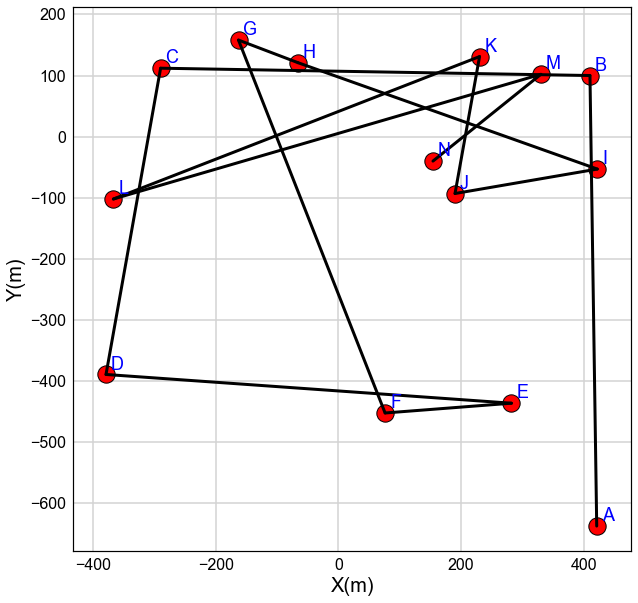
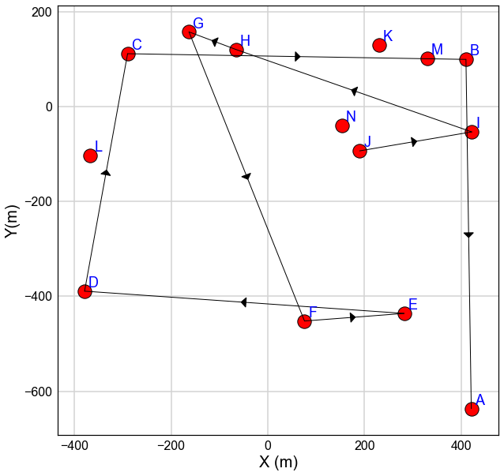
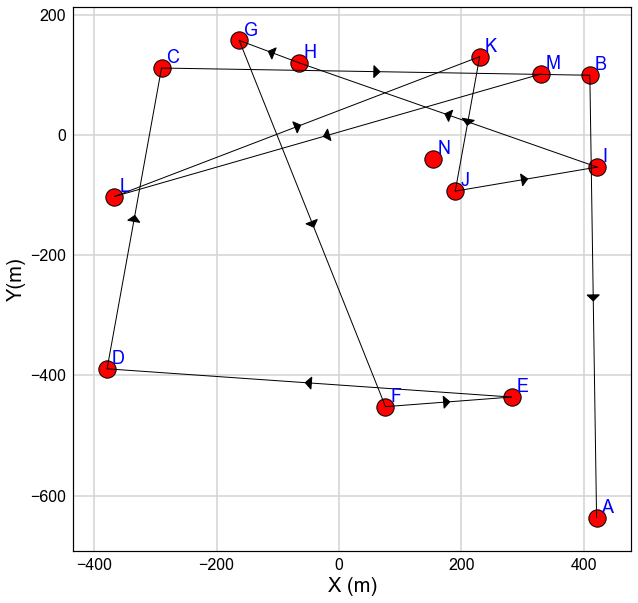
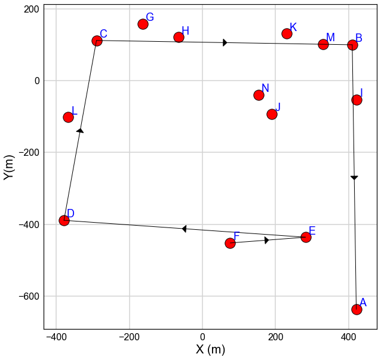
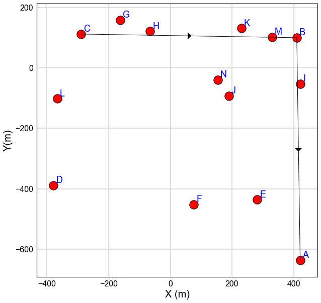

[1]:
import numpy as np
import pandas as pd
import PythonTools as PT
from matplotlib import pyplot as plt
import collections as CS
import os
import warnings
warnings.filterwarnings('ignore')
%load_ext autoreload
%autoreload 2
%matplotlib inline
PT.plot_settings()
Simple Implementation of Dijkstra Algorithm¶
Dijkstra algorithm¶
[2]:
from __future__ import absolute_import, division, print_function
import collections as CS
__author__ = 'Mosatafa Hadavand'
__date__ = 'April 2017'
__version__ = '1.000'
class Dijkstra:
'''
This is a class to implement dijkstra algorithm
'''
def __init__(self):
self.Nodes = set()
self.Edges = CS.defaultdict(list)
self.Distances = {}
def add_node(self, value):
self.Nodes.add(value)
def add_edge(self, From, To, distance):
self.Edges[From].append(To)
self.Edges[To].append(From)
self.Distances[(From, To)] = distance
self.Distances[(To,From)] = distance
def find_path(self,initial):
visited = {initial: 0}
path = {}
Path_All=CS.defaultdict(list)
Path_All[initial].append(initial)
# Sort unvisted Nodes (initially all the nodes are unvisited)
#------------------------------------------------------------
unvisited = set(self.Nodes)
while unvisited:
min_node = None
# Identifying the node with minmum distance in current loop
for node in unvisited:
if node in visited:
if min_node is None:
min_node = node
elif visited[node] < visited[min_node]:
min_node = node
if min_node is None:
break
unvisited.remove(min_node)
Current_Dist = visited[min_node]
# Calculating the distance for each unvisted node or replace
# the visited node distance if a shorter distance is found
for edge in self.Edges[min_node]:
weight = Current_Dist + self.Distances[(min_node, edge)]
if edge not in visited or weight < visited[edge]:
visited[edge] = weight
path[edge] = min_node
for node in path:
Path_All[node].append(node)
Connection=path[node]
Path_All[node].append(Connection)
while Connection is not initial:
Connection=path[Connection]
Path_All[node].append(Connection)
self.Path_All=Path_All
return visited, path, Path_All
def path_plot(self, Nodes_All, Node, Path_All=None, figsize=(10,10), Offset=[8,8], Grid=True,
Xlabel='X (m)', Ylabel='Y(m)', lw=3, Arrow_width=20,Arrow_length=10,
ax=None):
'''
A post-processing function to plot the results of dijkstra algorithm
Parameters:
Nodes_All (defaultdict with list arguments): Contains each point lable and the corresponding
Node (str): The node from which the shortest path is considered to the target node
X and Y Coordinates
figsize (tuple): Figure size (width, height)
ax (mpl.axis): Existing matplotlib axis to plot the figure onto
Offset (list): Offset to plot name of each node
Path_All (defaultdict with list arguments): Report of the shortest path for each point
Grid (bool): Add grid to the plot
lw(float): line width for the plot
'''
import matplotlib.pyplot as plt
if Path_All is None:
Path_All=self.Path_All
for i, node in enumerate(Nodes_All):
if node not in Path_All:
string='The node %s is in the original list but not in the dijkstra path!'%node
raise ValueError(string)
if Node not in Path_All:
raise ValueError('The specified Node is not in the provide dijkstra path dictionary!')
if ax is None:
fig, ax = plt.subplots(1, figsize=figsize)
if (len(Path_All[Node])>1):
for i in range (len(Path_All[Node])-1):
node1=Path_All[Node][i]
node2=Path_All[Node][i+1]
ax.plot([Nodes_All[node1][0],Nodes_All[node2][0]],
[Nodes_All[node1][1],Nodes_All[node2][1]],c='k',lw=lw)
dx=Nodes_All[node2][0]-Nodes_All[node1][0]
dy=Nodes_All[node2][1]-Nodes_All[node1][1]
ax.arrow(Nodes_All[node1][0]+dx/2, Nodes_All[node1][1]+dy/2, dx*0.01, dy*0.01, head_width=Arrow_width, fc='k', ec='k',
head_length=Arrow_length, shape='full', lw=1, length_includes_head=True)
for i, node in enumerate(Nodes_All):
ax.scatter(Nodes_All[node][0],Nodes_All[node][1], s=300,c='r',edgecolor='k')
ax.annotate(node, xy=(Nodes_All[node][0]+Offset[0], Nodes_All[node][1]+Offset[1]),color='b')
if Grid:
ax.grid(axis='both')
ax.set_xlabel(Xlabel)
ax.set_ylabel(Ylabel)
Generating random nodes and edges (an example network)¶
[3]:
List_Nodes=['A','B','C','D','E','F','G','H','I','J','K','L','M','N']
# Option 1: Random Node locations
np.random.seed(69079)
X_Coord=np.random.randint(-500,500,len(List_Nodes))
Y_Coord=np.random.randint(-900,500,len(List_Nodes))
# Random Connection between nodes
Connection=len(List_Nodes)
Index=np.zeros((Connection,2))
Index[:,1]=np.arange(0,Connection,1)
Index[:,0]=np.random.random(Connection)
DF=pd.DataFrame(data=Index,columns=['Random','Index'])
DF.sort_values(by='Random',inplace=True)
Nodes_All=CS.defaultdict(list)
for i, node in enumerate(List_Nodes):
Nodes_All[node].append(X_Coord[i]) # assign random X coordinate
Nodes_All[node].append(Y_Coord[i]) # assign random Y coordinates
[4]:
fig=plt.figure(figsize=(10,10))
ax=fig.add_subplot(111)
Offset=[8,8]
for i, node in enumerate(Nodes_All):
ax.scatter(Nodes_All[node][0],Nodes_All[node][1], s=300,c='r',edgecolor='k')
ax.annotate(node, xy=(Nodes_All[node][0]+Offset[0], Nodes_All[node][1]+Offset[1]),color='b')
for i in range (len(DF)-1):
One=int(DF['Index'][i])
Two=int(DF['Index'][i+1])
ax.plot([Nodes_All[List_Nodes[One]][0],Nodes_All[List_Nodes[Two]][0]],
[Nodes_All[List_Nodes[One]][1],Nodes_All[List_Nodes[Two]][1]],c='k',lw=3)
ax.grid(axis='both')
ax.set_xlabel('X(m)')
ax.set_ylabel('Y(m)')
[4]:
Text(0,0.5,'Y(m)')

Initialize the algorithm solver¶
[5]:
Test=Dijkstra()
Set Nodes¶
[6]:
for word in Nodes_All:
Test.add_node(word)
Test.Nodes
[6]:
{'A', 'B', 'C', 'D', 'E', 'F', 'G', 'H', 'I', 'J', 'K', 'L', 'M', 'N'}
Set Edges¶
[7]:
for i in range (len(DF)-1):
One=int(DF['Index'][i])
Two=int(DF['Index'][i+1])
Dist=np.array([Nodes_All[List_Nodes[One]][0],Nodes_All[List_Nodes[One]][1]])-np.array([Nodes_All[List_Nodes[Two]][0],
Nodes_All[List_Nodes[Two]][1]]) # Euclidean Distance
Dist=np.linalg.norm(Dist)
Test.add_edge(List_Nodes[One],List_Nodes[Two],Dist)
[8]:
Test.Edges
[8]:
defaultdict(list,
{'A': ['B'],
'B': ['A', 'C'],
'C': ['B', 'D'],
'D': ['C', 'E'],
'E': ['D', 'F'],
'F': ['E', 'G'],
'G': ['F', 'H'],
'H': ['G', 'I'],
'I': ['H', 'J'],
'J': ['I', 'K'],
'K': ['J', 'L'],
'L': ['K', 'M'],
'M': ['L', 'N'],
'N': ['M']})
[9]:
Test.Distances
[9]:
{('A', 'B'): 737.08208498104193,
('B', 'A'): 737.08208498104193,
('B', 'C'): 700.102849587116,
('C', 'B'): 700.102849587116,
('C', 'D'): 508.84378742399912,
('D', 'C'): 508.84378742399912,
('D', 'E'): 662.66884640821922,
('E', 'D'): 662.66884640821922,
('E', 'F'): 206.6204249342257,
('F', 'E'): 206.6204249342257,
('F', 'G'): 655.14960123623678,
('G', 'F'): 655.14960123623678,
('G', 'H'): 103.81714694596457,
('H', 'G'): 103.81714694596457,
('H', 'I'): 518.09265580588965,
('I', 'H'): 518.09265580588965,
('I', 'J'): 235.42302351299458,
('J', 'I'): 235.42302351299458,
('J', 'K'): 227.54340245324627,
('K', 'J'): 227.54340245324627,
('K', 'L'): 640.8572383924519,
('L', 'K'): 640.8572383924519,
('L', 'M'): 726.24031835199014,
('M', 'L'): 726.24031835199014,
('M', 'N'): 226.14154859291116,
('N', 'M'): 226.14154859291116}
Consider node A as the origin node¶
[10]:
Result,Path,TotalPath=Test.find_path('A')
[11]:
Result
[11]:
{'A': 0,
'B': 737.08208498104193,
'C': 1437.184934568158,
'D': 1946.0287219921572,
'E': 2608.6975684003764,
'F': 2815.3179933346023,
'G': 3470.4675945708391,
'H': 3574.2847415168035,
'I': 4092.377397322693,
'J': 4327.8004208356879,
'K': 4555.3438232889339,
'L': 5196.2010616813859,
'M': 5922.4413800333759,
'N': 6148.582928626287}
[12]:
Path
[12]:
{'B': 'A',
'C': 'B',
'D': 'C',
'E': 'D',
'F': 'E',
'G': 'F',
'H': 'G',
'I': 'H',
'J': 'I',
'K': 'J',
'L': 'K',
'M': 'L',
'N': 'M'}
Path from origin node to any other node in the network¶
[13]:
TotalPath
[13]:
defaultdict(list,
{'A': ['A'],
'B': ['B', 'A'],
'C': ['C', 'B', 'A'],
'D': ['D', 'C', 'B', 'A'],
'E': ['E', 'D', 'C', 'B', 'A'],
'F': ['F', 'E', 'D', 'C', 'B', 'A'],
'G': ['G', 'F', 'E', 'D', 'C', 'B', 'A'],
'H': ['H', 'G', 'F', 'E', 'D', 'C', 'B', 'A'],
'I': ['I', 'H', 'G', 'F', 'E', 'D', 'C', 'B', 'A'],
'J': ['J', 'I', 'H', 'G', 'F', 'E', 'D', 'C', 'B', 'A'],
'K': ['K', 'J', 'I', 'H', 'G', 'F', 'E', 'D', 'C', 'B', 'A'],
'L': ['L', 'K', 'J', 'I', 'H', 'G', 'F', 'E', 'D', 'C', 'B', 'A'],
'M': ['M',
'L',
'K',
'J',
'I',
'H',
'G',
'F',
'E',
'D',
'C',
'B',
'A'],
'N': ['N',
'M',
'L',
'K',
'J',
'I',
'H',
'G',
'F',
'E',
'D',
'C',
'B',
'A']})
Plot shortest path from the origin node (i.e. A) to any other node in the network¶
[14]:
Test.path_plot(Nodes_All,Node='J',lw=1)

[15]:
Test.path_plot(Nodes_All,Node='M',lw=1)

[16]:
Test.path_plot(Nodes_All,Node='F',lw=1)

[17]:
Test.path_plot(Nodes_All,Node='C',lw=1)
